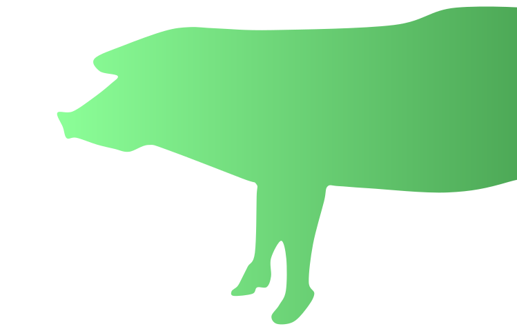
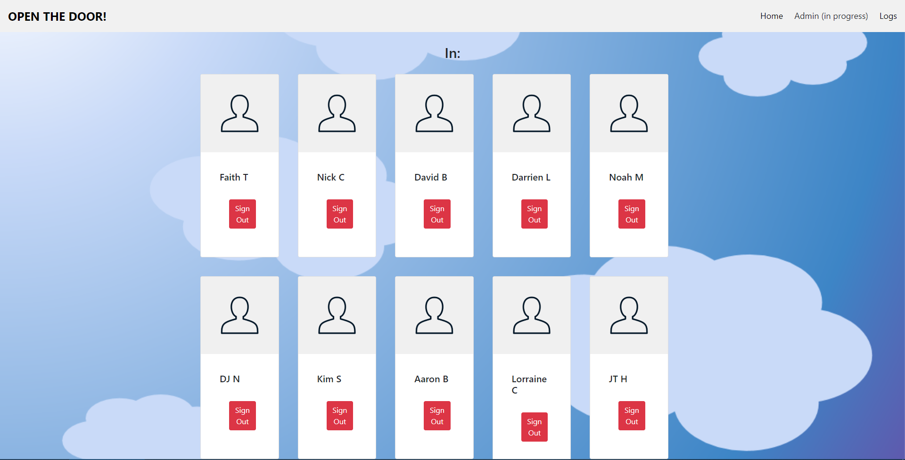
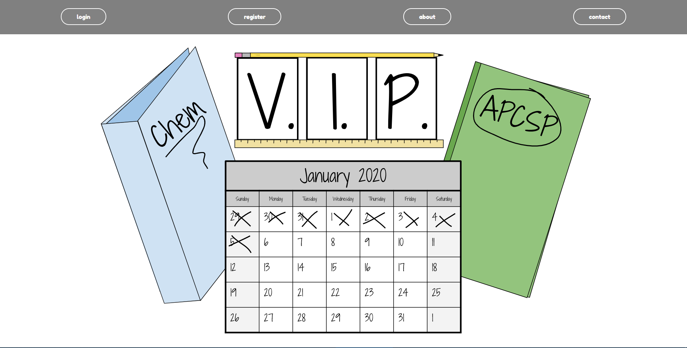
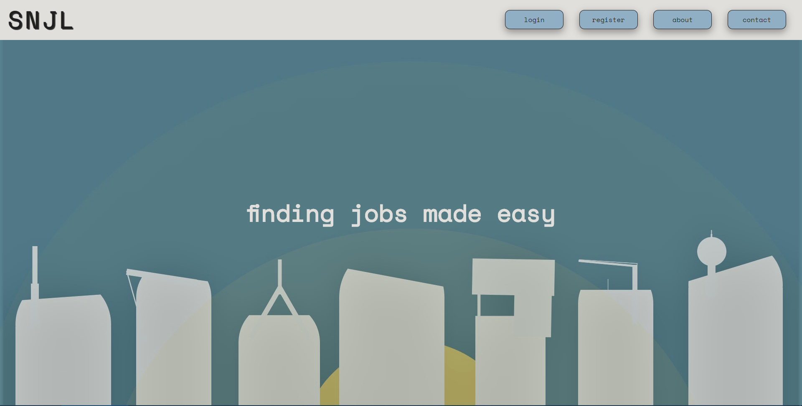
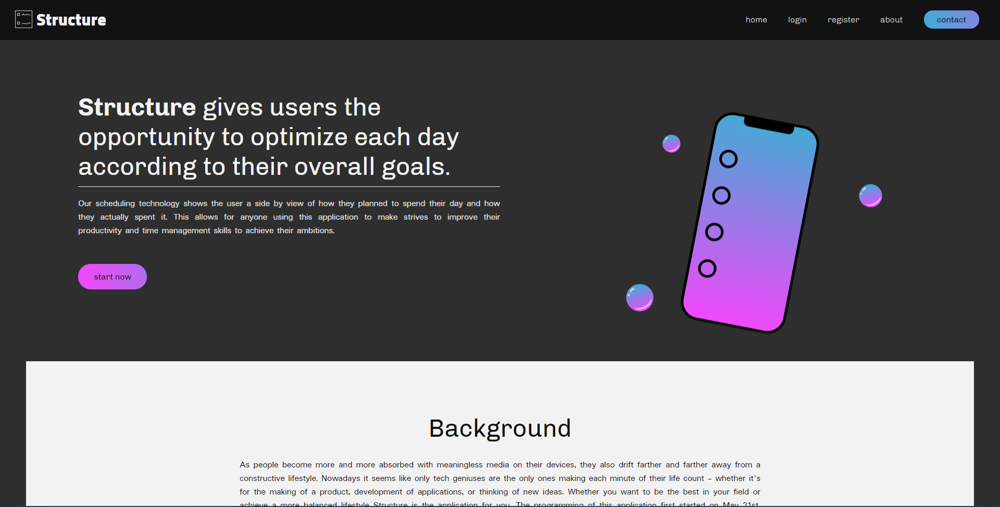
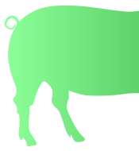

Matt Mammano
Website Developer and Interface Designer
For the past 5 years I have been creating websites, exploring new
technologies, and programming robust applications.

Personal Projects

2019 - This website was made for the special needs class when
one of the teachers confronted me about a problem they were having.
Too many students were leaving the classroom and wandering around
the halls for extended periods of time. This gave me the idea
to make a sign-in/sign-out application that allows the students
to easily enter where they are going and tap sign in when they
return. Teachers are then able to print logs at the end of the
day of all of the data.

2019 - This web application - which I was the lead programmer for - won
the Congression App Challenge. It is a task manager website that
is still in progress and will soon allow you to plan scheduled times
for your homework and other activities throughout the day. Many students
have trouble planning their school work and after-school activities
which can lead to anxiety and depression. This website attempts to
prevent that and instead provides an easy to understand UI for all
ages to plan their work.

2019 - This website was also made for the special needs class in my school and
allows them to apply for jobs in their neighborhood. A large
amount of students from that classroom normally become factory workers
or do some type of manual work - although I wanted to be able to
provide alternatives for them. With this service, employers can sign
up and make a job for students in the area to apply for. The teens
can filter through the occupations by their interests and distance
from their home.

2020 - This application was recently created to allow for users to
schedule their entire day. Then after the day is finished they
enter into the system how they spent it. From there, the website
can determine how productive you were and if you lived up to
your expectations or not. Although this application is still
in development, it is planned to be finished soon.
About Me
I'm Matt Mammano - a website developer and interface designer - and
I've been exploring the realm of programming since I was in middle
school. Since then, I have been learning and developing new skills
in a multitude of programming languages. These languages include HTML/CSS,
JavaScript, PHP, Python, SQL, Java, C/C++, and more. My portfolio of
existing websites ranges from ones supporting the special needs class
at my own school to a Congressional App Challenge winning task management
application.

Front-end
I have created many purely aesthetic websites that showcase
my ability to combine HTML, CSS, and JavaScript to create
beautiful designs. As this is very important to clients, I
make strives to learn as much as I can about designing graphical
interfaces and making simple UIs.
Back-end
I also am an experienced back-end developer - with a lot of
experience with databases and security. As clients often emphasize
on their application's safety, I've studied the processes of
going about this. My primary languages in this section would
be Python, PHP, and SQL.
Other
I began programming while in middle school where I was inspired
by videos of people programming microcomputers in C and solving
equations with Java. Since then I've learned much more about
these languages and have a keen sense of problem solving.
Hire Me
Feel free to email me if your are interested in transforming your
next idea into a website. My contact information is located to the
right and I hope to chat more.
Email: mattmammanoweb@gmail.com
Phone Number: 908-910-5439
Phone Number: 908-910-5439